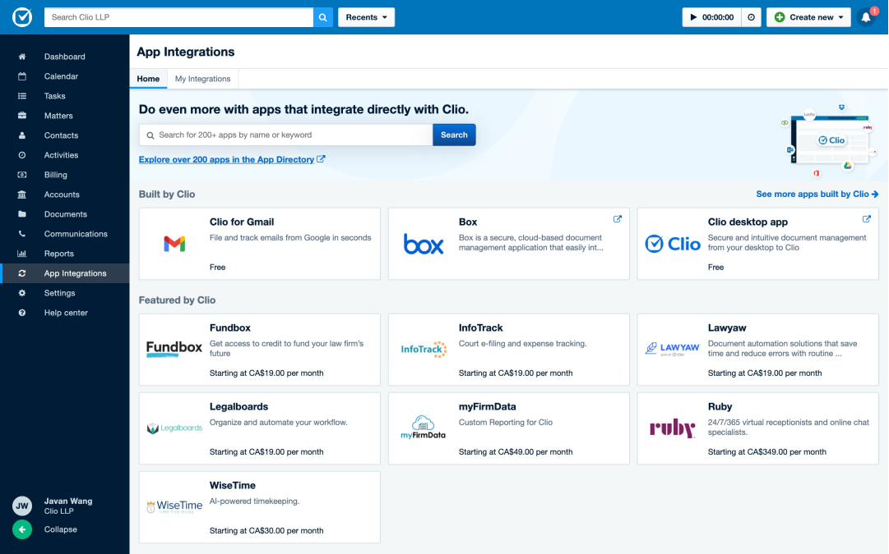

Leading the end-to-end research, design implementation, and product vision of Clio's app ecosystem.
I led the design of several product areas within the App Ecosystem that feed into an overarching product vision informed by research findings and strategic business needs. Outcome: new user enablement rate increased by 400% across a 12 month period.
Role
Design lead
Discovery research
Design vision
Interaction design
Usability studies
Triad Peers
Jonas Caruana (PM)
Andrew Pearse (DM)
Duration
Nov 2020 - Present
Final Design Outcomes

In App Experience — App Integrations
Customers can find and install the most popular apps without leaving Clio. Relevant information for Clio customers to make informed purchase decisions are surfaced to help customers find the right apps for their needs. See it live at app.clio.com (Clio account required)
Developer Hub + Developer Knowledge Center
Design and launch of a Developer Hub to provide a more guided experience for onboarding third party developers.
Redesign and overhaul of the Developer Knowledge Center to help third party developers on their journey as they learn and build using Clio's API.
App ecosystem is a problem space that has two primary user types, the developer who creates app solutions for the platform, and the legal professional who finds app solutions to address their business needs.
I was the first designer fully dedicated to the app ecosystem, most of what exists had been assembled as a side-of-desk project by stakeholders across different departments within the organization. I aimed to tackle the product space holistically, and look at the existing problems with a service-design centric lens.
Leading with Research
When I first joined the product area, there's a lack of foundational research into the existing customer experience and pain points. Shortly after joining, I advocated for and launched a research study to uncover foundational insights that will help the team understand the entire customer journey.
We conducted 1-hour interviews with 12 users across 10 firms who have installed and used third party apps in a 3 week span, with an intentional focus on having a diverse pool of candidates from different practice area, demographic backgrounds, firm sizes, roles, and types of installed apps. The interviews were conducted in pairs, where I would alternate between facilitator and notetaker with my PM partner or another designer.
The Clio App Ecosystem customer journey informed from the research findings.
The research objectives for the study.
One of the many findings that help inform our foundational understanding of how customers interact with the app ecosystem today.
Outcomes from Research
From the research our team identified key product gaps around discoverability, security, and privacy of apps for customers. I presented findings to my triad as well as the larger product org, and provided recommendations for how we can address these gaps. Here are 3 prominent themes selected from the findings,
Most customers learned about apps outside of Clio.
Customers discover apps by being told about a specific integration (by name) which they then search and vet outside of Clio. Many noted difficulty finding relevant information about the apps they are interested in.
Most participants don’t have time to thoroughly test different apps.
Most participants stuck with the first app they were satisfied with, and did not install and trial more than one candidate.
Instead of trialing different apps, most participants based their purchase decision on info they could find on the app websites and the app details page.
Upfront cost is one of the most important factors for firms when deciding whether to purchase an app.
Lawyers from smaller firms are more likely to opt for a solution with a cheaper upfront cost that is not as feature-rich compared to the “premium solutions”. More expensive options are immediately screened out. Note that 80% of Clio's customers are smaller firms of less than 4 people.
A series of projects that followed would allow customers to search for any app in the app directory and find the most popular apps without leaving Clio.
Helping App Developers Succeed
Up until this point, there's been less investment into the app developer experience compared to the Clio customer experience. By collecting what feedback we could, both internally and from developers, we quickly noticed some pretty major gaps in the overall experience. I quickly launched a (shorter) design study with 10 app partners to help uncover major pain points, and provide recommendations for areas of opportunity. A new developer hub was created for developers to onboard to Clio's app ecosystem easily.
[Developer Journey screenshot]
Early low-fi concept for the Developer Hub for how it would connect to the account creation service and a new Developer Knowledge Center.
Maze usability test with 11 non-Clio developers for the mid-fidelity wireframes to collect user feedback.